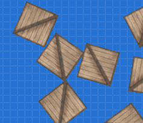
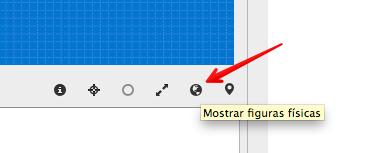
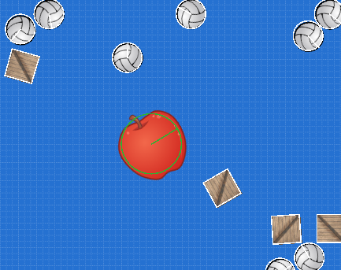

Colisiones Físicas
Las colisiones te permite disparar acciones cuando dos o mas actores entran en contacto. Esto nos permite hacer que los personajes puedan chocar con enemigos o capturar objetos.
Dos tipos de colisiones
En pilas-engine tenemos dos tipos de colisiones, hay colisiones físicas y colisiones programadas.
Las colisiones físicas son aquellas que generan una reacción que se puede visualizar como una respuesta física, por ejemplo si creamos 5 cajas y las hacemos rebotar entre sí, estas serían colisiones físicas:

cajas = pilas.actores.Caja() * 5
Podríamos decir que las colisiones físicas son casi automáticas, las genera el mismo motor de física que trae pilas-engine sin mucho código.
En cambio, las colisiones programadas son aquellas que tienen una reacción por código, y generalmente tienen que ver con la lógica del juego (perder, ganar puntos, pasar de nivel etc..)
Por ejemplo, una colisión programada sencilla se puede visualizar si creamos un personaje que se pueda mover con el mouse y se alimente comiendo bananas:

mono = pilas.actores.Mono()
mono.aprender("Arrastrable")
bananas = pilas.actores.Banana() * 10
def cuando_colisiona(mono, banana):
banana.eliminar()
mono.sonreir()
pilas.colisiones.agregar(mono, bananas, cuando_colisiona)
Modo depuración física
El modo depuración física nos permite observar las figuras físicas de cada uno de los actores. Para activar este modo, podés pulsar la tecla F12 o simplemente hacer click sobre el ícono "mostrar figuras físicas":

Con este modo habilitado, vas a poder observar la figura de colisión que lo representa:

En color blanco aparecen las figuras físicas, que al rebotar con otras producirán una reacción de choque y rebote. Y de color verde van a aparecer los sensores.
Los sensores son figuras físcias pero que no generan una reacción al momento del choque.
Acceder a las figuras de colisión
En muchos momentos vas a necesitar hacer ajustes sobre las figuras de colisión. Lo mas común es cambiar el tamaño de las figuras (para ajustarlas al tamaño del actor) o convertir las figuras a sensores.
Para acceder a las figuras de colisión tienes que usar el atributo
figura_de_colisión del actor, o bien cambiar su tamaño directamente
cambiando el atributo radio_de_colisión por ejemplo:
mono = pilas.actores.Mono()
mono.radio_de_colision = 30
mono.radio_de_colision = 80
mono.radio_de_colision = 10
Cada vez que asignes un valor al atributo radio_de_colision, pilas va a
generar una circunferencia y la va a colocar como figura de colisión para el
actor.
Cambiando las figuras de colisión
En la mayoría de los casos la figura circular es la que mejor se ajusta al area de un actor.
Sin embargo, hay algunos casos en donde necesitamos cambiar completamente la figura de colisión por otra.
La forma mas sencilla de cambiar una figura por otra, es crear la figura
física primero y luego asignarla a la propiedad figura_de_colision del
actor:

Para construir este ejemplo construímos dos actores, al primero lo dejamos tal cual, pero al segundo le cambiamos la figura de colisión por un rectángulo:
zanahoria_normal = pilas.actores.Zanahoria(x=-100)
zanahoria = pilas.actores.Zanahoria(x=100)
rectangulo = pilas.fisica.Rectangulo(0, 0, 40, 100, sensor=True, dinamica=False)
zanahoria.figura_de_colision = rectangulo
Colisiones con etiquetas
Ten en cuenta que existe un atajo para definir colisiones usando el concepto de etiquetas, que se verá en la siguiente página de este manual.